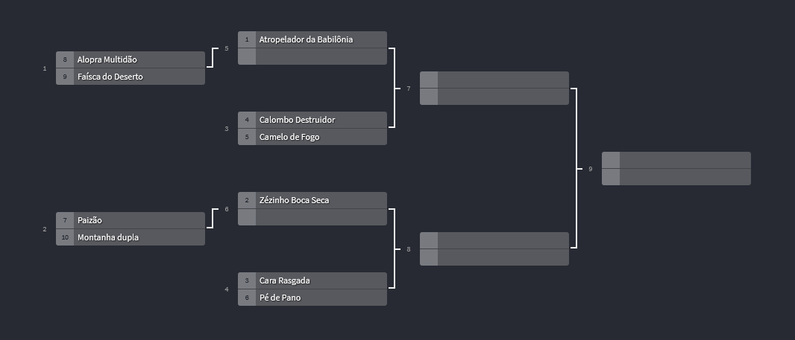

Liga Nacinal de Luta de Camelo começa na proxima terça e será transmitido pela nossa plataforma de streaming
A nova temporada da famosa competição que diverte tantas pessoas começará na proxima semana e será transmitido pela DuckSports Streaming, confera as chaves abaixo.

Chaves:
Não esqueça de acompannhar o campeonato pela nossa plataforma DuckSports Streaming, os jogos começam na proxima segunda dia 07/09 às 19:00h